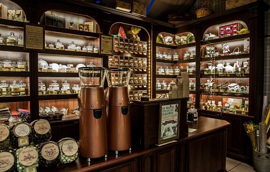

О компании
Мы рады приветствовать Вас на сайте компании «Coffee Ru». С 2005 года мы занимаемся выращиванием, обработкой и продажей различных сортов кофе. Нам доверяют известные фирмы и рестораны, поскольку наша компания предлагает только качественные товары, поставленные на рынок производителями или эксклюзивными дистрибьюторами. Компанией «Coffee Ru» управляют профессионалы, имеющие многолетний опыт работы в представительствах западных компаний в России. Инфраструктура, оборудование и программное обеспечение, обработка заявок, ведение документации, информационная безопасность соответствуют жестким западным корпоративным стандартам. Поэтому мы гарантируем качество, продаваемого нами кофе. Разрабатывая наш сайт, мы стремились к тому, чтобы выбор товара был для Вас приятен, а процесс покупки несложен. Для этого мы старались использовать только проверенную информацию и качественные фотографии товара. Умеренное использование графики и удобные средства навигации позволяют существенно экономить Ваше время. Мы надеемся, что Вы оцените качество наших услуг и испытаете много прекрасных минут, пользуясь оборудованием и наслаждаясь продуктами, поставленными компанией «Coffee Ru».
